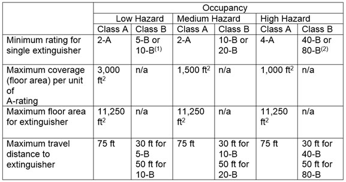

09.F First Response Fire Protection
09.F.01–09.F.07
09.F.01 Portable fire extinguishers shall be provided where needed as specified in Table 9-4.
- Fire extinguishers shall be inspected monthly and maintained as specified in NFPA 10.b. Records shall be kept on a tag or label attached to the extinguisher, on an inspection check list maintained on file, or by an electronic method that provides a permanent record. Record/tag shall include date inspection was performed and initials of the person performing the inspection.
09.F.02 Approved fire extinguishers.
- Fire extinguishers shall be approved by a nationally recognized testing laboratory and labeled to identify the listing and labeling organization and the fire test and performance standard that the fire extinguisher meets or exceeds.
- Fire extinguishers shall be marked with their letter (class of fire) and numeric (relative extinguishing effectiveness) classification.
- Fire extinguishers using carbon tetrachloride or chlorobromomethane extinguishing agents are prohibited.
- Soldered or riveted shell self-generating foam or gas cartridge water-type portable extinguishers that are operated by inverting the extinguisher to rupture or initiate an uncontrollable pressure generating chemical reaction to expel the agent are prohibited.
09.F.03 Fire extinguishers shall be in a fully charged and operable condition and shall be suitably placed, distinctly marked, and readily accessible.
09.F.04 When portable fire extinguishers are provided for employee use in the workplace, the employer shall provide training (upon initial employment and at least annually thereafter) in the following:
- General principles of fire extinguisher use and the hazards involved with incipient stage fire fighting to all employees; and
- Use of the appropriate firefighting equipment to those employees designated in an emergency action plan to use firefighting equipment.
TABLE 9-4
Fire Extinguisher Distribution

1) Up to 3 foam extinguishers of at least 2 1/2 gal (9.5 L) capacities may be used to fulfill low hazard requirements
2) Up to 3 aqueous film foaming foam (AFFF) extinguishers of at least 2 1/2 gal (9.5 L) capacities may be used to fulfill high hazard requirements
Derived from NFPA 10:
In multiple-story facilities, at least 1 extinguisher shall be adjacent to stairways.
On construction and demolition projects, a 1/2 in (1.2 cm) diameter garden hose, not to exceed 100 ft (30.4 m) in length and equipped with a nozzle, may be substituted for a 2-A rated fire extinguisher provided it its capable of discharging a minimum of 5 gal (18.9 L) per minute with minimum hose stream range of 30 ft (9.1 m) horizontally. The garden hose lines shall be mounted on conventional racks or reels. The number of location of hose racks or reels shall be such that at least 1 hose stream can be applied to all points in the area.
09.F.05 Approved fire blankets shall be provided and kept in conspicuous and accessible locations as warranted by the operations involved.
09.F.06 No fire shall be fought where the fire is in imminent danger of contact with explosives. All persons shall be removed to a safe area and the fire area guarded against intruders.
09.F.07 Standpipe and hose system equipment.
- Standpipes shall be located or otherwise protected against damage. Damaged standpipes shall be repaired promptly.
- Reels and cabinets used to contain fire hose shall be designed and maintained to ensure the prompt use of the hose valve, hose, and other equipment. Reels and cabinets shall be conspicuously identified and used only for fire equipment.
- Hose outlets and connections shall be located high enough above the floor to avoid their obstruction and to be accessible to employees. To ensure hose connections are compatible with support fire equipment, screw threads shall be standardized or adapters shall be provided throughout the system.
- Standpipe systems shall be equipped with vinyl type or lined hoses of such length that friction loss resulting from water flowing through the hose will not decrease the pressure at the nozzle below 30 psi (206.8 kPa) gauge. The dynamic pressure at the nozzle shall be within 30 psi (206.8 kPa) gauge and 125 psi (861.8 kPa) gauge.
- Standpipe hoses shall be equipped with basic spray nozzles with a straight stream to wide stream spray pattern. Nozzles shall have a water discharge control capable of functions ranging from full discharge to complete shutoff.
{kind=link}